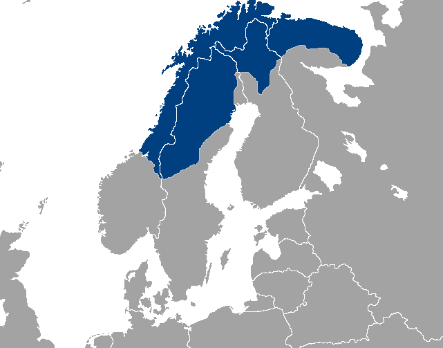

Le Sapmi
Les samis appellent le territoire sur lequel ils vivent “Sápmi” (en bleu sur l'image). Cette région, particulièrement jolie, est également très tranquille. Le Sápmi est un espace qui accueille rivières sauvages, lacs et ruisseaux aux eaux pures, toundra et forêts, les sommets sont enneigés. Les samis y sont implantés depuis des temps immémoriaux. A l'origine le peuple vivait de la terre sans pour autant l’exploiter.
